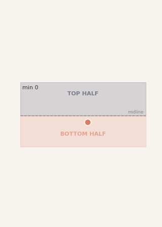
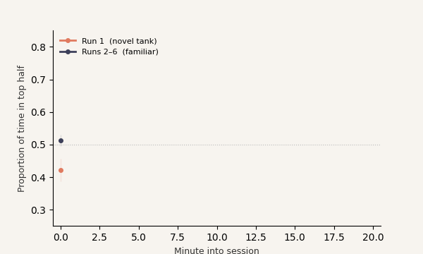
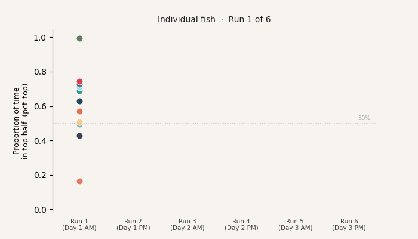
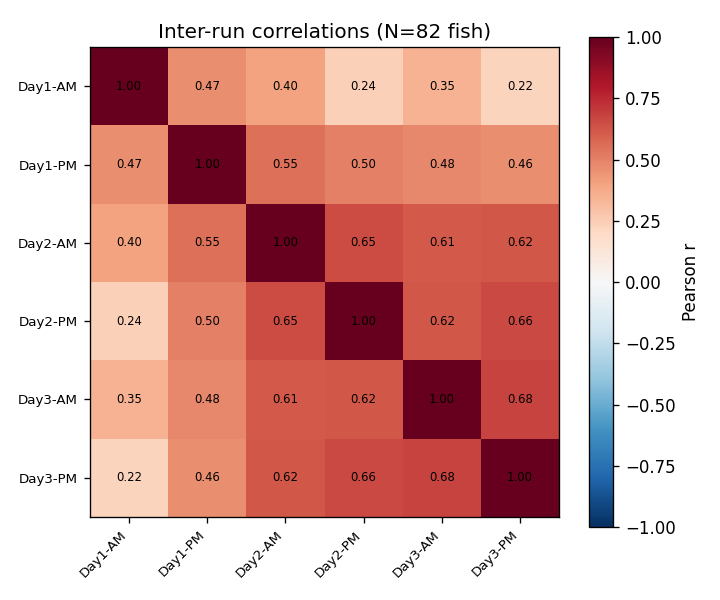
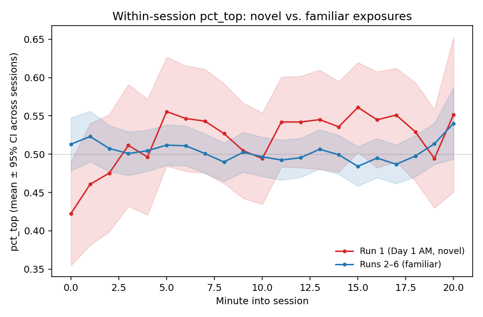

We tested 103 zebrafish six times each and asked whether the same fish stayed bold or shy across every session — and whether that consistency is strong enough to be scientifically useful.
The Test
The novel-tank test places a single fish in a clean tank it has never seen before. A camera tracks its position automatically for 20 minutes.
The key insight is where the fish goes. An anxious fish stays near the floor — the bottom feels safer in an unfamiliar space. A bolder fish explores the upper half sooner and more often.
Our main measure is pct_top: the proportion of time the fish spends in the top half of the tank. Higher = bolder, less anxiety-like behavior.

Within-Session Behavior
Pooled across all fish and all sessions, pct_top climbs steadily over the 20-minute window. This is habituation — the fish relaxes as it learns the tank is safe. The rise is small per minute but consistent and statistically reliable.
But notice something important: the red line (Run 1) and the dark line (Runs 2–6) have different shapes even though their 20-minute averages are similar. Run 1 starts much lower and rises steeply; Runs 2–6 are nearly flat from the start. We return to this in the Run 1 section.

Individual Differences
If pct_top measures something stable about an individual fish, then the ranking of fish should be preserved from one session to the next: the boldest fish in Run 1 should still be near the top in Run 6, and the shyest fish should stay near the bottom.

To put a number on this consistency, we measure Cronbach's α — a standard reliability statistic borrowed from psychology and educational testing. Think of the six sessions as six judges scoring each fish. If the judges agree with each other, the average score is reliable. α ranges from 0 (no consistency) to 1 (perfect).
The correlation matrix below shows all 15 pairwise relationships between the six sessions. Brighter = higher correlation = fish that ranked high in one session also ranked high in the other.

Single-Session Reliability
Cronbach's α = 0.855 describes the reliability of the average across all six sessions, not a single one. For practical purposes — and to compare with other labs — we need to know how reliable one session is on its own.
We use repeatability R, which splits the total variation in pct_top into two parts: stable between-fish differences (the signal) and session-to-session fluctuation (the noise). R is the fraction that is signal.
How does R ≈ 0.50 become α = 0.855? The Spearman-Brown formula predicts exactly this: averaging six independent measurements of a measure with R = 0.50 gives a composite reliability of 0.86. There is no mystery — the high α comes from the power of repetition, not from any single session being unusually informative.
Compared to published work on related measures:
Our single-session repeatability sits at or above the upper end of published values — a strong result for a behavioral measure.
The First Exposure
The correlation matrix above showed Run 1 sticking out: its correlations with later sessions (r = 0.22–0.47) are consistently lower than the correlations among Runs 2–6 (r = 0.46–0.68). Why?
Look at the curves below. The group mean pct_top for Run 1 is about the same as for Runs 2–6 — so it's not that fish behave differently on average the first time. What's different is the shape: Run 1 starts much lower (anxious, near the bottom) and rises steeply. Runs 2–6 start near the middle and stay flat.

The key distinction: Run 1 measures the fish's novelty response — how quickly it recovers from fear and begins exploring. Runs 2–6 measure a more stable individual exploration tendency. These two things are related but not the same, which is why Run 1 correlates less tightly with later sessions.
When we exclude Run 1 and compute reliability on Runs 2–6 only, single-session R rises from ~0.50 to ~0.59, and Cronbach's α rises from 0.855 to above 0.85 for a five-session composite — confirming that the "familiar-tank" behavior is more consistent than the first-time novelty response.
Other Behavioral Measures
We tracked five behavioral measures per session. Each one captures a different aspect of how the fish moves and explores the tank.
| Measure | What it captures | Single-session R | 6-session α |
|---|---|---|---|
| pct_top | Proportion of time in the upper half of the tank | 0.855 | |
| velocity | Average swimming speed | 0.86 | |
| x position SD | How much the fish roams side to side (range of horizontal movement) | 0.86 | |
| transitions | Number of times the fish crossed the top/bottom midline | 0.75 | |
| latency to top | Minutes until the fish first entered the top half | 0.70 |
Vertical position (pct_top), swimming speed (velocity), and horizontal range (x SD) are all equally repeatable. Transitions and latency are somewhat less consistent — both are measured only on frames where the fish was actually detected moving, so freezing periods (invisible to the tracker) reduce their precision.
Summary